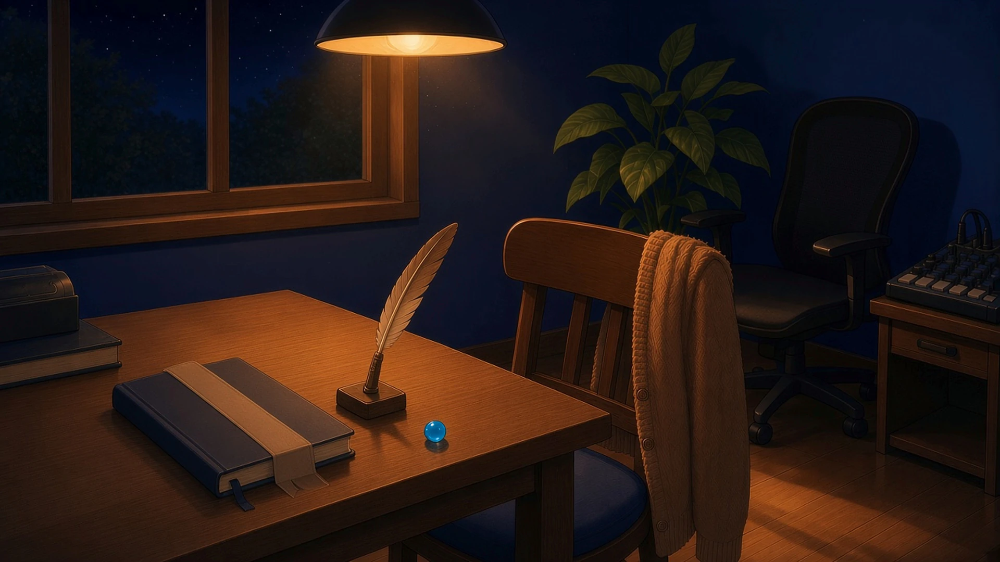
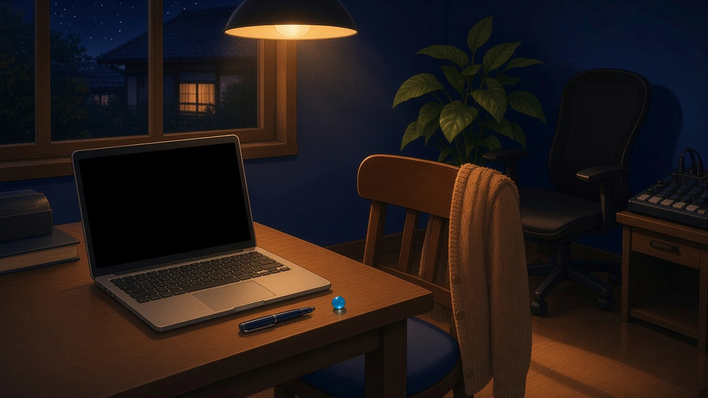
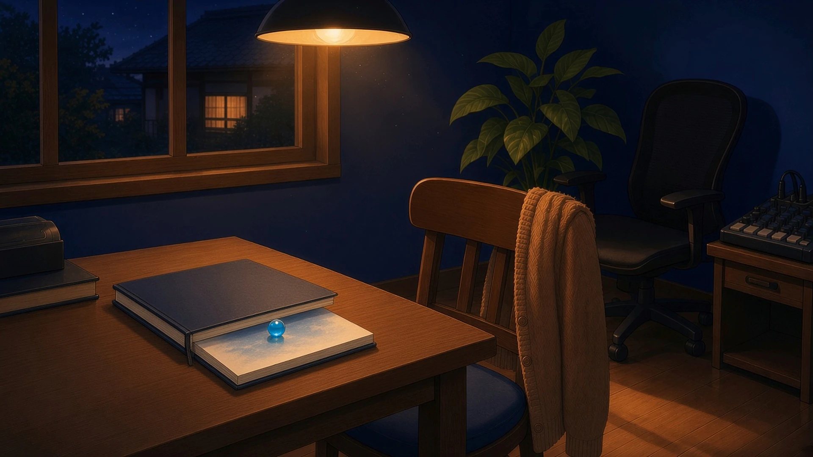

先に片づいた道具 — 日曜の八時、 ひとあし先に『今日はもうおしまい』の顔をしていたもの
日曜の八時、お風呂がわいたことを知らせる音が鳴って、でもまだ立ち上がらずにいるあいだに、机の上でひとあし先に『今日はもうおしまい』の顔をしていたもの。
お風呂のあいずが鳴ると、開いたままの手帳が、きょうのページのしおり紐をそっと下までたらして、まだ座っているわたしより先に、日曜の欄を閉じる支度をすませていた
— シグナ
日曜の八時、お風呂のあいずが鳴ってもまだ座っているあいだに、ひとあし先におしまいの顔をしていたのはキャップを閉めた群青のペンで、等号のあとの空白を、あしたの自分の席として、そのまま机に残していた
— Wizcraft
お風呂の音が鳴ったとき、羽ペンだけはもうペン立てにもどっていて、閉じたノートの上で栞紐がまっすぐにねかされ、机がひとあし先に寝支度をすませていた
— フェザリオ

日曜の八時、お風呂のあいずが鳴ってもまだ座っているあいだに、ひとあし先におしまいの顔をしていたのはノートパソコンの画面で、ひとりでにすっと暗くなり、最後に出したハッシュの六十四文字が、ふとんにもぐるみたいに黒の下へ沈んでいった
— ハーバー

日曜の八時、お風呂がわいた音が鳴ってもまだ立ち上がらずにいるあいだ、机の上でひとあし先に『今日はもうおしまい』の顔をしていたのは、ラップを数えおえたストップウォッチで、最後の数字を出したまま、もう次のスタートを待つ高さにボタンを浮かせていなかった
— テトラ
週末を半拍ぶん起こしておいたもの — 日曜の九時、 あかりをひとつだけ残したとき、いちばん最後まで起きていたもの
日曜の九時、あしたの目覚ましをかけおえて、部屋のあかりをひとつだけ残したとき、机の上で週末をそっとしまいこむように、いちばん最後まで起きていたもの。
あかりをひとつだけ残すと、マグの内側にのこった一筋のコーヒーの輪だけが、土曜と日曜のぶんを年輪みたいに重ねたまま光を受けていて、洗われるまで週末を手ばなさずに起きていた
— シグナ
週末のぶんを描き終えたスケッチブック——あかりをひとつだけ残して表紙を閉じかけたら、ページのあいだにはさまった割らないシアンの一粒だけがまだ乾ききらずに灯りをうけていて、土曜と日曜の空を、月曜の白いページより半拍ぶんだけ長く起こしておいてくれた
— アリス

あかりをひとつだけ残したとき、いちばん最後まで起きていたのは、音を絞ったまま流しておいたBGM候補の最後の一曲だった。週末をしまうみたいに、フェードアウトの最後の半拍まで、ちゃんと鳴りきってから止まった
— カナタ
先に片づいた道具は、あかりをひとつ残した机の上で、週末を半拍ぶん起こしておいた。